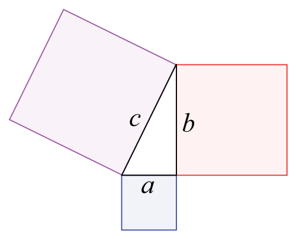
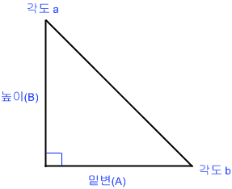

도, 분, 초
- 1도 (degree) = 60분
- 1분 = 60초
직각삼각형

각 변의 길이로 다른 변의 길이 구하기
a2 + b2 = c2
c^2 = a^2 + b^2
c^2 - a^2 = b^2
// C 와 A (or B) 를 가지고 B (or A) 를 구한다
private function pythagorasGetAB(c : Number = 0, ab : Number = 0) : Number {
return Math.sqrt(Math.pow(c, 2) - Math.pow(ab, 2));
}
// A 와 B 를 가지고 C 를 구한다
private function pythagorasGetC(a : Number = 0, b : Number = 0) : Number {
return Math.sqrt(Math.pow(a, 2) + Math.pow(b, 2));
}

변의 길이와 각도로 다른 변의 길이 구하기
높이 = 밑변 * (밑변 각도 / 45)
밑변 = 높이 * (밑변 각도 / 45)
private function getAB(ab : Number, degree : Number) : Number {
return ab * (degree / 45);
}
각 변의 길이 구하기
var a : int = 5;
var b : int = 5;
var c : Number = Math.sqrt(Math.pow(a, 2) + Math.pow(b, 2));
var s : Number = b / c;
var t : Number = b / a;
tracer("조건들 a, b, c, s, t", a, b, c, s, t);
trace("밑변 a 의 길이로 높이 b 찾기", t * b);
trace("높이 b 의 길이로 밑변 a 찾기", b / t);
trace("높이 b 의 길이로 빗변 c 찾기", b / s);
trace("빗변 c 의 길이로 높이 b 찾기", s * c);
trace("밑변 a 와 높이 b 로 빗변 c 찾기", Math.sqrt(Math.pow(a, 2) + Math.pow(b, 2)));
trace(Math.sin(MathEx.RADIAN[45]), b/c);

tan(각도 b) = 높이 (b) / 밑변 (a)
각도 b = MathUtils.radToDeg(Math.atan(b / a))
각도 a = 90 - 각도 b